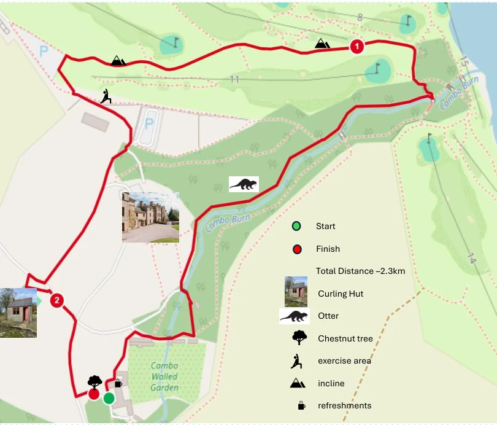
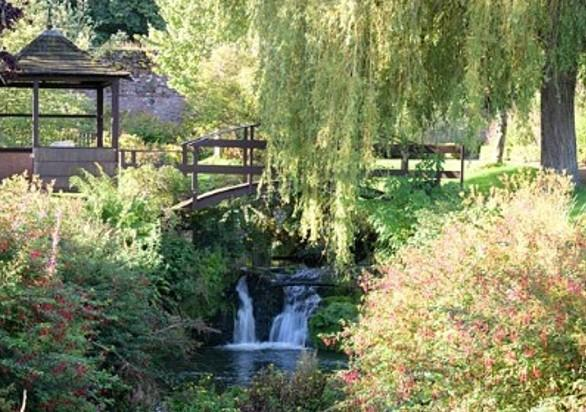
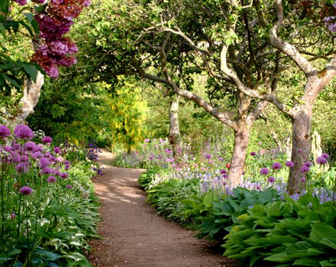
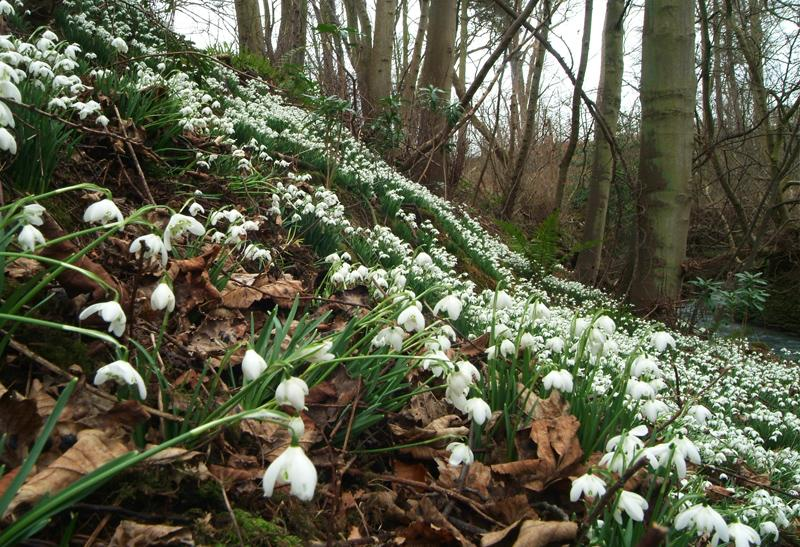
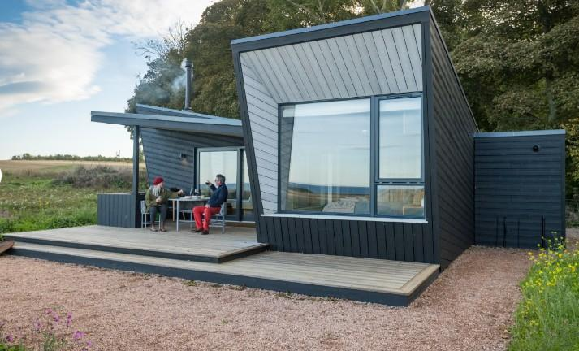

Otters’ holt
The booklet asks walkers to look out for the otters’ holt on the opposite side of Cambo Burn.
Cambo Health Walks
A 2.3 km walk from the Stables Visitor Centre, following Cambo Burn toward Fife Coastal Path and across the golf course before returning via Cambo House.
Find your way

Select the map to enlarge it.
This 2.3 km route starts and finishes at the Stables Visitor Centre. It follows Cambo Burn north toward the Fife Coastal Path, crosses the golf course, and returns past the Estate storage compound and Cambo House.
The booklet highlights views across Cambo Sands, the Kingsbarns Clubhouse, an otter holt, and the Curling Hut.
Read the full route descriptionThe walk
From the Stables Visitor Centre head north, through the Prairie Garden, following the path close to the Walled Garden, past the hard fruit store and twin-arched shed, across a bridge over the Cambo Burn, then turn left and walk past the old Gas Works, back over a second bridge and through a gate that takes you along a path with Cambo House on your left.
Keep following this path, with the burn on your right, past the bridge with the submerged heat exchange collector, then through a double gate past another bridge, all the time heading north. On this section, keep an eye out for the otters’ holt on the opposite side of the burn.
Staying on the left side of the burn the path curves to the left towards a gate signed for Fife Coastal Path. Through the gate bear left passing the wooden toilets on the right and take the next path that leads on to a tarmac path traversing the golf course. Along this path there are views across Cambo Sands, the Kingsbarns Clubhouse and various holes on the course. There are undulating inclines along this path that offer no protection on a windy day!
Near the end of the path turn left, then left again towards a large gate at the side of which is a small gate for easy access into the Estate storage compound. Care should be taken passing through this area as it contains items of machinery, logs, pallets etc.
After this compound turn right in the direction of Cambo House and follow the path keeping Cambo House on the left. Arriving at a T-junction, directly opposite are the tennis courts, that were originally a curling pond, alongside which is the Curling Hut where the curling stones were stored. The Curling Hut is open to view. If time permits, then viewing is recommended.
Turn left and with Cambo House on the left, the road sweeps to the right and the walk finishes under the chestnut tree at the entrance to the Stables Visitor Centre.
Look out for
Features identified in the Links Walk booklet and route map.
The booklet asks walkers to look out for the otters’ holt on the opposite side of Cambo Burn.
The route meets the signed path and crosses the golf course, with views across Cambo Sands and toward the Kingsbarns Clubhouse.
Beside the tennis courts, the hut stored curling stones when the courts’ site was a curling pond. The booklet says the hut is open to view.
The route finishes beneath the chestnut tree at the entrance to the Stables Visitor Centre.
Take care
Take care in the Estate storage compound, which contains machinery, logs and pallets. The golf-course path has undulating inclines and offers no protection on a windy day.
Underfoot
The described route includes paths, gates and bridges, followed by a tarmac path across the golf course. The booklet notes undulating inclines on the golf-course section. It does not give further details about surface condition or accessibility.
Plan ahead
The golf-course section has no protection on a windy day. The booklet does not describe other weather effects on this route.

These walks have been developed by the Monday Walking Group which meets at the Cambo Stables each Monday morning at 9.30am, weather permitting.
The group walks are in association with Walking Scotland, a National Walking and Wheeling charity, whose purpose is to encourage walking by providing a framework for organised walking groups.
Walking Scotland use both terms walking and wheeling as it’s more inclusive. Both words represent the action of moving at a pedestrian’s pace, whether or not someone is unaided or using some kind of wheeled mobility aid.
The Walk Leaders have received appropriate training to ensure the walks are suitable and risk assessed for all attending, including those who use wheeled devices.
The walks are short, safe and social at a pace that we are able to talk. They last approximately 1 to 1¼ hours and between 1 and 5km in length. Depending on weather conditions, the paths may be slippery in places.
Cambo Gardens are managed by the Cambo Heritage Trust with its simple aim for Cambo to be a place ‘where people and plants grow’.

Walking Scotland use both terms walking and wheeling as it’s more inclusive. Both words represent the action of moving at a pedestrian’s pace, whether or not someone is unaided or using some kind of wheeled mobility aid.
Walking Scotland use both terms walking and wheeling as it’s more inclusive. Both words represent the action of moving at a pedestrian’s pace, whether or not someone is unaided or using some kind of wheeled mobility aid.
Shared information
These exercises can be performed at a suitable location during the walk, as marked on the route map.

The Cambo Estate has been in the Erskine family for 300 years and in 1976 Lady Catherine Erskine and her husband Sir Peter took over the estate and began offering volunteering and training opportunities to the local community and opened to the public in the 1980s at snowdrop time when the grounds around the house are carpeted white.
Developing the walled garden was a logical next step in making a garden of interest to visitors all through the year. The head gardener introduced bold planting inspired by the New Perennial Movement* using grasses and late season perennials that didn’t need staking or deadheading, achieving high output for low input. In late summer and autumn these plantings reach a peak of beauty and interest as the grasses flower amongst herbaceous perennials including persicaria, asters, eupatorium and sedums.
*Note: a naturalistic landscape and horticultural design style that mimics wild plant communities like prairies, meadows, and steppes.
The garden has entered a new chapter which may include training opportunities, an event space, and a contemporary cutting garden.



Cambo Burn flows through the estate and offers scenic woodland walks. There are six early 19th-century cast-iron footbridges crossing the burn at various intervals. Extending 17 acres along the burn, this woodland garden showcases a diverse array of flora and is a testament to generations of Erskine family stewardship. Before reaching the North Sea, Cambo Burn winds through Cambo Ness, a well-known site for rare migrant birds and a tranquil escape by the water’s edge.

Downstream from the Walled Garden a submerged heat-exchange collector, for Cambo House's water-source heat pump, is installed with its arrangement as follows:
The heat pump replaced Cambo House's previous oil boiler.
Cambo Estate has signed up for the Green Tourism Standard to commit to making further improvements on an ongoing basis and, to date, have achieved the Silver under the Green Meetings standard.
Cambo offers two (The Hideaway & The Bothy) ‘Off-Grid’ self-sufficient eco-cabins where comfort meets adventure.
Powered by solar panels and designed to blend with the environment the cabins are all about spending time outdoors where you can cook on the fire pit or BBQ, laze on the deck and gaze up at the stars or enjoy simply watching deer, squirrels and all the native birdlife.
